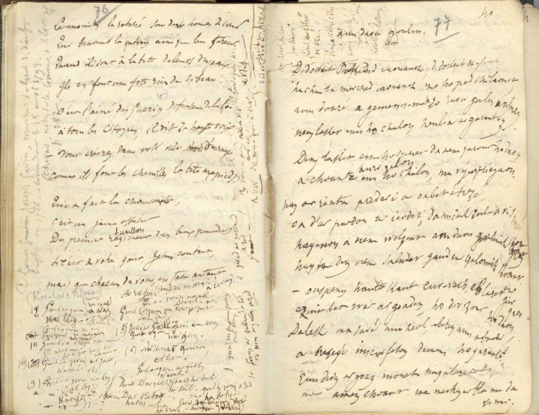
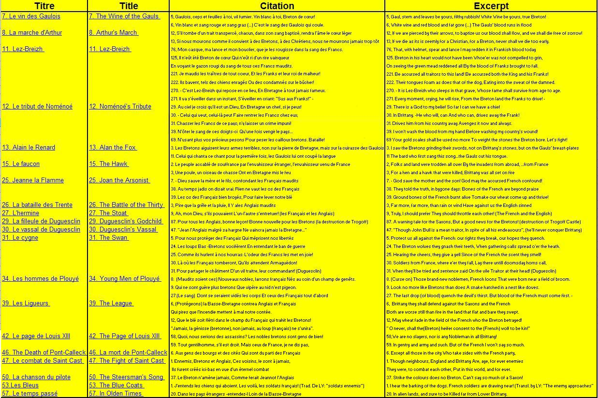
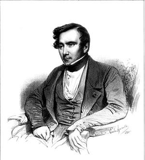
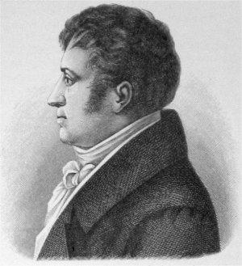

Le vin des Gaulois
The Wine of the Gauls
Dialecte de Léon (*)
|
En 1879, lors d'une séance de la Société archéologique du Finistère, LV dit être passé à Coray en 1841 et y avoir recueilli des informations sur le chouan Bonaventure Carré auprès d'un "nommé Jourdan , ancien tambour dans les armées de la République". Cf. Klemmgan Itron Nizon Selon Luzel et Joseph Loth, cités (P. 389 de son "La Villemarqué") par Francis Gourvil qui se range à leur avis, ces deux chants historico-mythologiques feraient partie de la catégorie des chants inventés . Cependant cela est infirmé à juste titre par l'Abbé Henry (cf. Nomenoé ), en dépit des remarques ironiques de F. Gourvil qui le cite. L'abbé écrivait en novembre 1867: " Il y a cinquante ans j'ai entendu chanter... l'air du Vin des Gaulois. " (*) Dialecte: En 1845 le dialecte indiqué était celui de Cornouaille. Bien que le texte n'ait que peu changé, le dialecte devient celui de Léon en 1867. |
In 1841, on a session of the Société archéologique du Finistère, LV declared that he was at Coray in 1841, when he collected information on the Chouan Bonaventure Carré from "a named Jourdan , a former drummer in the Republican army". Cf. Klemmgan Itron Nizon According to Luzel and Joseph Loth, quoted by Francis Gourvil (p. 389 of his "La Villemarqué"), these two historical/mythological songs were " invented " by their alleged collector. However this is invalidated - and righly so - by a statement of Abbé Henry (see Nomenoé ), in spite of the ironical remark appended by Gourvil to this quotation. The priest wrote in November 1867: " Fifty years ago I heard someone sing... the air of Wine of the Gauls. " (*) Dialect: In 1845 the dialect was styled "Cornouaille dialect". Though the text was hardly changed, it became "Léon dialect" in 1867. |
Mélodie
(Hypodorien ou la mineur, Arrangt MIDI: Chr. Souchon)
Est-ce une coincidence? L'accompagnement au "bouteillophone" du
Diable dans la bouteille de la très talentueuse
Juliette Noureddine ressemble fort au "Vin des Gaulois" du Barzhaz!
| Français | English |
|---|---|
|
I. Le vin des Gaulois
1. O, Vin blanc de treille Vaut mieux qu'oseille! (1) Le vin blanc de la treille! (bis) Feu, feu, acier bleu, Acier, chêne et feu! Chêne et terre et mer! Mer et chêne et terre! (2) 2. O, Mieux qu'hydromel vaut Vin nouveau! Mieux qu'hydromel il vaut! (3) (bis> Refrain 3. Mieux vaut l'éclat du vin Que l'airain! (4) Mieux vaut l'éclat du vin! (bis> Refrain 4. Vin de Gaulois enivre, Non le cidre! Vin de Gaulois enivre! (bis) Refrain 5. Au Gaulois, feuille et cep Que l'on jette! (5) Au Gaulois, feuille et cep! (bis) Refrain 6. Vin blanc à toi, Breton De renom! Vin blanc à toi Breton! (bis) Refrain 7. Mêlons le rouge sang Au vin blanc! Vin blanc et rouge sang! (bis) Refrain 8. Vin et sang rouge, bois! Le sang gras! Bois vin blanc et sang gras! (bis) Refrain 9. Sang rouge et vin blanc Un étang! (6) Sang et vin, une race. (bis) Refrain 10. Gaulois, c'est ton sang Ce torrent! Gaulois, c'est ton sang! (bis) Refrain 11. Sang et vin que je bois Au combat. Sang et vin que je bois! (bis) Refrain 12. Le vin, le sang abreuvent Pour l'épreuve Le vin, le sang abreuvent. (bis) Refrain II. La Danse du Glaive 13. Sang, vin, danse t'éveillent O Soleil! Sang, vin, danse t'éveillent (bis) Refrain 14. Nos danses, nos chants, Soient des péans! Nos danses et nos chants. (bis) Refrain 15. La ronde des épées Assemblées (7); La danse de l'épée. (bis) Refrain 16. Le chant du sombre glaive (8) Qui achève. Le chant du sombre glaive. (bis) Refrain 17. Le glaive veut sa proie Il est roi. Le glaive veut sa proie. (bis) Refrain 18. Glaive! Glaive, grand roi Du combat! Glaive, glaive, grand roi! (bis) Refrain 19. Qu'à ton front luise un bel Arc en ciel! Un sublime arc en ciel! (bis) Feu, feu, acier bleu, Acier, chêne et feu! Chêne et terre et mer! Mer et chêne et terre! |
I. The Wine of the Gauls
1. White wine of vine, No bramble brine!(1) White wine of vine be mine! (twice) Fire, fire, steel o steel, Fire, fire, steel and fire! Oak, oak, flood and smoke! Flood and ground and oak! (2) 2. New wine, of grape made, And no mead! New wine of grape be shed! (3) (twice) Chorus 3. Better is glittering glass, O, than brass! (4) Better is glittering glass! (twice) Chorus 4. Gauls' gay wine is better Than cider! Gauls' gay wine is better! (twice) Chorus 5. Gaul, stem and leaves be yours And refuse! Gaul, stemm and leaves be yours! (5) (twice) Chorus 6. White wine be yours, Breton! You brave man! White wine be yours, Breton! (twice) Chorus 7. Let wine and blood gather Together! Let wine and blood gather! (twice) Chorus 8. White wine and blood, galore And fat gore! White wine and blood, galore! (twice) Chorus 9. Let red blood and white wine turn To one burn! (6) Let red blood and white wine! (twice) Chorus 10. Behold all: the Gauls' blood Runs in flood! Behold all the Gauls' blood! (twice) Chorus 11. Blood and wine flow away! Bloody fray! Blood and wine flow away! (twice) Chorus 12.White wine and blood quicken! O drink them! White wine and blood quicken! (twice) Chorus II. The Dance of the Sword 13. Blood and wine! Now, our dance, Sun, enhance! Blood and wine. Now our dance! (twice) Chorus 14. Dance and song and shout, Shout and bout! Dance and song and shout! (twice) Chorus 15. Dance of blade be led In the glade (7) The dance of the blade! (twice) Chorus 16. Song of the sword grey (8) That will slay! Song of the sword grey! (twice) Chorus 17. The sword claims its prey! It holds sway The sword claims its prey! (twice) Chorus 18. O sword, O great king In the field! O sword, O great king! (twice) Chorus 19. Let there be a rainbow On your brow! Let there be a rainbow! (twice) Fire, fire, steel o steel, Fire, fire, steel and fire! Oak, oak, flood and smoke! Flood and ground and oak! |
|
(1) En fait, il est question de "mouar", (de"mûre"), tandis que "barr" signifie "branche" et plus spécifiquement "grappe" (barr rezin). Par ailleurs le texte breton est fait d'allitérations intraduisibles ("gwell eo gwin gwenn...").
(2) Comme dans "La ceinture de mariage" le refrain, qui sonne comme une suite d'onomatopées, a bel et bien un sens. (3) Le breton: "mez" signifie soit "glands", soit "hydromel". Dans sa traduction, La Villemarqué parle ici de "bière", mais c'est à tort. (4) C'est ici que La Villemarqué évoque l'hydromel. Le texte breton parle de "kufr", mot que, semble-t-il, le dictionnaire ignore. Peut-être s'agit-il de "kouevr" (cuivre) et de la couleur d'une boisson bretonne? Le mot fait pendant à l'expression "gwin a lufr" (le vin qui brille) (5) "Dit pezh teil": exactement :"A toi, espèce de fumier!" (6) Dans le texte breton: "aouen", rendu par La Villemarqué, par le mot "rivière". Dans l'édition de 1867 la traduction de cette 9ème strophe est intercalée entre la 1ère et la seconde strophe. Le dictionnaire du Père Grégoire (1732) donne le mot "aven, avon" (rivière) comme "als." (ancien) et "hors d'usage", si ce n'est dans les noms de lieux "(rivière d')Aven" et Pont-Aven". Doit-on aussi penser à la fameuse "awen" celtique ("inspiration artistique"), dont les esprit les plus critiques assurent qu'elle est à l'origine de toute cette pièce (entre autres)? (7) "En eze": est aussi absent du dictionnaire. La Villemarqué le traduit par "en cercle". (8) Le mot qui désigne l'épée en breton, "kleze", est parent du latin "gladius" d'où vient le mot "glaive" (ainsi que "gladiateur" et "glaïeul"). C'est aussi le "clay" de "claymore" (la grande épée, "kleze meur"). |
(1) "Mouar" means "mulberries" and "barr" means "cluster" (of grapes). This is a hopeless attempt to translate a Breton text made up of untranslatable alliterations ("gwell eo gwin gwenn...").
(2) Like in the "Wedding girth" , the chorus, though sounding merely onomatopoetic, does have a specific meaning. (3) The Breton "mez" means either "acorns" or "mead". La Villemarqué translates it as "beer", but he is not right. (4) In this verse La Villemarqué's translation mentions "mead". The Breton original has "kufr", a word which I could find nowhere. Maybe a typo for "kouevr", (copper, brass), a hint at the colour of the Breton beverage. It is opposed to "gwin a lufr" (the wine glitters). (5) "Dit pezh teil" means literarily: "for you, the manure heap"! (6) The mysterious word "aouen" is rendered in La Villemarqué's translation as "brook" (in the 1867 edition, the translation of stanza 9 will be found between stanzas 1 and 2!). In the Rev. Gregoire's Dictionary (1732), the word "aven, avon" (river) is tagged as "als." old and "no longer in use", except in the place names "(River) Aven" and (Town) POnt-Aven. We may also think of "awen", a Celtic word meaning "poetic inspiration" which, according to the most sceptical critics, is the only source of the whole present piece (among others)! (7) "En eze" is also mysterious. La Villemarqué translates it as "in a circle". (8) The Breton word for sword (kleze) is related to Latin "gladius" (gladiator, gladiolus). It is the "clay" in "claymore" (large sword, kleze meur). |
Cliquer ici pour lire les textes bretons.
For Breton texts, click here.

|
Français, Gaulois, Francs et Franks
La traduction par La Villemarqué du mot "Gall" , pluriel "Gallaoued", dans le titre de ce chant par "Gaulois", n'est pas innocente. Moriz Hartmann et Ludwig Pfau, dans leur traduction du "Barzhaz Breizh" publiée en 1859, parlent de "Frankenwein" - qui désigne habituellement, non pas l'ancêtre du Muscadet, mais le vin de Franconie -. L'édition de 1839 du Barzhaz traduisait "ar C'hallaoued" par "les Français", qui est le sens ordinaire du mot. L'apparition, à partir de 1845, des expressions "les Gaulois" et surtout "Les Franks" (dans l'"argument"), permet de rattacher le chant à un passage de l'"Histoire des Francs" , ouvrage latin de l'évêque Grégoire de Tours (538 - 594), où il est question des raids que faisaient les Bretons en territoire Franc, au 6ème siècle, pour s'approvisionner en vivres, et en particulier en vin, chez l'ennemi. Elle permet surtout d'invoquer à propos de ce chant, entendu, affirme-t-il, dans les "tavernes de la paroisse de Coray" (à une vingtaine de Km à l'est de Quimper), la prestigieuse autorité d' Augustin Thierry (1795 -1856): "Le morceau qu'on va lire a été composé, selon l'illustre auteur des 'Récits mérovingiens', au retour d'une de ces expéditions." Thierry orthographiait ainsi ce mot ( "Franks") pour désigner "le mot tudesque, le nom national des conquérants de la Gaule, articulé selon leur idiome", par opposition au mot franc, "libre". Le premier avait un sens "ethnographique", le second "social" . Dangereuse "ethnographie". Par "ethnographique" Thierry entend, malheureusement, "racial", car cette donnée prétend s'appuyer sur des éléments physiologiques. Son frère cadet, Amédée Thierry , dans son "Histoire des Gaulois" parue en 1844, perfectionne cette théorie en distinguant deux branches distinctes chez les Gaulois (les "Galls" et les "Kimris"). L'avertissement alors lancé par Michelet ne fut pas entendu: "Prenez garde en prononçant ce mot de race qu'il ne soit un prétexte à justifier dans le passé et à continuer dans l'avenir les haines, les jalousies et les querelles du présent." Quant aux rérérences au Barzhaz Breizh faites par son frère, elles feront dire au critique allemand August Wilhelm Schlegel (1767 - 1845) qu'" Augustin Thierry avait quitté les seuls guides sûrs dans l'obscurité des origines bretonnes pour courir après les feux follets d'une tradition postiche. L'on ne saurait protester assez énergiquement contre une telle invasion de rêveries et de données apocryphes dans le domaine de l'histoire " (cité par La Villemarqué dans "Contes populaires des anciens Bretons, 1848, T.II, p.365). Le "Vin des Gaulois" et son prolongement, la "danse du glaive", sembleraient illustrer ce propos! Toutefois Schlegel faisait preuve d'un scepticisme excessif qu'il étendait aux manuscrits gallois, lui qui écrivait "Nous n'avons aucun moyen de juger du talent des bardes gallois. Les poésies débitées sous les noms de Taliésin, d'Aneurin, Merzin et Llyvarch Hen sont évidemment des inventions modernes. Assurément après quatre siècles de domination romaine, il n'y avait plus de barde en Grande-Bretagne." Ces poésies composées dans une période allant du VIème au X siècle occupaient à l'époque les 148 premières pages de L'Archéologie galloise d'Owen-Myvyr, qui reprenaient des manuscrits datant des XIIème, XIIIème et XIVème siècles, dont personne n'a jamais mis en cause l'authenticité, ni douté qu'ils reflétaient fidèlement des réalités bien plus anciennes: le Livre noir de Caermarthen, les Livres de Taliésin et d'Aneurin et le Livre rouge d'Hergest. Source: "Aux origines du nationalisme breton" de Bernard Tanguy - Editions 10-18 - oct. 1977. Les pièces historiques à caractère national - Roman Jeanne de Montfort de Pitre-Chevalier, 1840: (Jeanne La Flamme); - Contes populaires des anciens Bretons, 1842: (Bran, "Départ" de Lez-Breizh); - Revue de l'Armorique, octobre 1843: Combat des Trente; - La Bretagne Ancienne et Moderne de Pitre-Chevalier, 1844: Les Séries, La Submersion de la Ville d'Is, Le Clerc de Rohan, La Filleule et le Vassal de Duguesclin et la Page de Louis XI. - Le Faucon (mais les citations anti-françaises en sont absentes); - Le Vassal de Duguesclin (également recueilli, sous d'autres titres, par d'autres collecteurs); - et Le Page de Louis XIII. Selon Eva Guillorel, on trouve, en outre, dans les deux autres carnets des éléments relatifs: - à certaines parties de Lez-Breizh; - aux Jeunes Hommes de Plouié; - au Page de Louis XIII (collecté par Mme de Saint-Prix, de Penguern, Luzel,..); - au Marquis de Pontcallec (collecté de multiples fois); - et à la Chanson du Pilote (recueillie uniquement par La Villemarqué). - Enfin, des feuilles volantes ont trait au chant "Les Bleus". On jurerait que ces Gaulois avaient lu le Barzhaz! Et l'on croirait à l'authenticité de cette pièce, si l'auteur n'évoquait pas aussitôt le "Jeu du printemps et de la jeunesse" et son noeud de rubans aux couleurs druidiques que la comparaison avec ses carnets de collecte dénonce clairement comme des supercheries (cf. La fête de Juin ).
Dans l'Introduction, part. VIII, chap.3, La Villemarqué ne cite que deux expressions galloises réputées "conservée par les Bretons", dans "Le vin des Gaullois": le comparatif "na" (na mouar, na mez, nag aval) qui se dit aujourd'hui "eged" et, dans la "Danse du Glaive", "stourmaez", champ de bataille. Les notes (1) à (7) ci-dessus visent d'autres mots qui ne sont pas immédiatemment compréhensibles; (il conviendrait d'y ajouter le mot "briz" de la strophe 11: est-ce l'équivallent de "brizherezh", "emportement"?) La publication du 2ème carnet de collecte en novembre 2018 confirme ce qui précède. A en juger par la couleur de l'encre et la position du texte sur la feuille, les notes des pages 76 et 77 peuvent être classées comme suit:
Ces couplets qui comportent le mot "gwad" (sang) apparaissent dans l'espace restant en bas et à droite de la page 76, puis, inscrits verticalement sur 4 colonnes, dans la marge droite de la même page. Il y a tout lieu de penser que ces variations sur le thème du sang qui font écho aux écrits de Grégoire de Tours, sortent de l'imagination de La Villemarqué.
Ils sont notés en écriture verticale dans la marge haute de la page 77 (cf page bretonne ). Ils ont sans doute été inspirés à La Villemarqué par les médailles des Cénomans dont il parle dans son "Grand mystère de Jésus" (cf. supra). En sus de cette "danse du glaive" (stophes 13 à 19) et, sans doute, d'une partie ou de la totalité des "couplets du sang" (strophes 7 à 12), le Barde de Nizon, a ajouté, dans le poème du Barzhaz, la strophe 3 (qui comporte les énigmatiques rimes "lufr" et "kufr") et la strophe 9 (où, outre le sang, il est question d'"awen", d'"inspiration mystique", de rivière ou de "gouenn", de "race"). Seules les 5 premières strophes ont un équivalent incontestablement authentique dans le manuscrit. Celles du carnet qui traitent des mérites comparés du vin blanc et de la pipe ont DISPARU, tout comme celles qui évoquent le poiré et le lait caillé . En revanche, l' impertinente strophe 5 qui prône la division du travail entre consommateur bas-breton et vigneron gallais (au premier, les flots de nectar, au second les ceps, les feuilles et l'engrais) faisait bien partie du chant de l'ivrogne de Coray, quoi qu'ait pu en penser Gourvil! Le rapprochement des mots "deil" (= "delioù", feuilles) et "teil", fumier, permettait d'ajouter une nouvelle assonance à ce poème spirituel qui les accumule et ne constituait en aucune manière une insulte adressée à l'infortuné viticulteur. L'étonnant refrain qui se présente dans la Barzhaz comme une suite d'onomatopées auxquelles on peut trouver un sens est absent du manuscrit. Pourtant, la mélodie suppose, voire impose l'existence d'un tel refrain. On peut penser que La Villemarqué qui a inséré à grand peine ce chant entre la "Chanson sur Charrette", page 76 et les "Deux pigeons", page 77, n'a pas jugé nécessaire de le noter, certain sans doute de l'avoir aussi fidèlement gravé dans sa mémoire, que l'air entrainant qui accompagne ce chant. Il n'y a donc pas de raison de le supposer inauthentique, même s'il a pu, lui aussi, avoir été quelque peu transformé par le collecteur. Remarque: A la page 7 du carnet 3, sans doute rédigée en 1843, La Villemarqué a noté ceci: [Français de m... / La peau du diable leur colle au dos! [C'est] ce que disaient aux Francais les Bretons au séminaire de St Brieuc. Haine et délation des Francais et des Bretons. Antipathie et lutte au séminaire de St Brieuc entre les Bretons & les Français, & prises de corps. Injures. vexations éprouvées par les Bretons de la part des maîtres. Les Bretons plus forts en études". Il ne s'agit pas de notes autobiographiques. Le jeune La Villemarqué a fait son éducation au collège des Jésuites de Sainte-Anne d'Auray, puis aux petits séminaires de Guérande et de Nantes avant de s'inscrire comme élève libre à l'Ecole des Chartes à Paris. |
French, Gauls, Francs and Franks
When La Villemarqué translates the word "Gall" , plural "Gallaoued" in the title of this song as "Gauls", he does it on purpose. The German translators of the "Barzhaz Breizh" , in 1859, use the word "Frankenwein" that usually applies to Franconia wine and not to the Loire wine, Muscadet! In the first edition of the Barzhaz (1839) "ar C'hallaoued" was rendered as "the French", which is the normal way of translating the phrase. As from 1845, the introduction of the words "the Gauls" and above all, "the Franks" (in the "argument" to the song), enables a connection with a chapter in the Latin "History of the Franks" by the Bishop Gregory of Tours (538 - 594) who reports raids made by the Bretons into Frank territory, in the 6th century, to get supplies of food, in particular of wine, from the enemy. But in the first place, it allows La Villemarqué to invoke in the context of a folk song heard, so he says, in the pubs of the parish Coray (c. 15 miles east of Quimper), the prestigious authority of the historain Augustin Thierry (1795 -1856): "The piece you will read was composed, as stated by the illustrious author of the "Merovingian narratives", on the way back from one of these raids. " The unusual spelling (in French) chosen by Thierry -"Franks" instead of "Francs"-. applies to the " Germanic word, the name of the Conquerors of Gaul, pronounced in conformity with their idiom," as opposed to the word "Franc", meaning "freeman". The first word had an "ethnographic", the second a "social" meaning. Dangerous "ethnography" Unfortunately, it appears that, by "ethnographic", Thierry meant "racial", since his conception of this word was a physiological one. His younger brother, Amédée Thierry , in his 'History of the Gauls', published in 1844, develops the same theory by identifying, within the Gaulish stock, two different branches: the "Galls" and the "Kimris". The great historian Michelet was not heard, who warned: "Take care when pronouncing the word "race" that it should not be a pretext to justify in the past and prolong in the future, hatred, jealousy and quarrels that are the hallmarks of the present times." As for his brother's reference to the Barzhaz Breizh, it was severely judged by the German critic August Wilhelm Schlegel (1767 - 1845) who wrote that "Augustin Thierry had swerved from the only reliable guides in the darkness of Breton antiquity and was now chasing after the wills-o'-the-wisp of pretended tradition. This invasion of serious history by daydreams and forgeries must be opposed with the utmost energy." (quoted by La Villemarqué in his "Contes populaires des anciens Bretons, 1848, T.II, p.365) Both the "Wine of the Gauls" and the "Dance of the Sword" appended to it might be an illustration of this assertion! However Schlegel showed excessive scepticism which he extended to the Welsh manuscrits when he wrote: "We have no way to measure how talented were the Welsh Bards. The poetry retailed as written by Taliesin, Aneurin, Myrddin and Llyvarch-Hen is clearly modern forgery. Who could doubt that after four centuries of Roman rule, there were no bards left in Great-Britain?" These works composed between the 6th and the 10th century took up at the time the first 148 pages of Owen-Myvyr's "Archaeology of Wales", where they were copied from 12th, 13th and 14th century manuscripts whose authenticity and their truly reflecting much older realities are beyond doubt: the Black Book of Caermarthen, the Books of Taliesin and Aneurin and the Red Book of Hergest. Source: "Aux origines du nationalisme breton" by Bernard Tanguy - Editions 10-18 - oct. 1977. Historical songs with national character This double song ushers in a long series of pieces noticeable by their marked "national" character . We see in them the Bretons challenge their neighbours from West and North (the French and the English). The issue "was La Villemarqué one of the chief promoters of Breton jingoism" will be addressed in connection with the political creed expressed in the Lament of Pontcallec . At the present stage we will only copy a list quotations from the Barzhaz put up by Francis Gourvil, on pages 390 with 393 of his "La Villemarqué", in support of this view, whereby, in his opinion, all these aphorisms, without exception, were invented by the collector himself, along with the songs where they are found . However we must bear in mind that Francis Gourvil, possibly was prevented from looking on this question quite serenely, as he had been a former militant in four Breton nationalist organizations, before he turned into a fierce opponent to this ideology (see. Gwenc'hlan , inset "Francis Gourvil" on page bottom). - in the novel "Jeanne de Montfort" by Pitre-Chevalier, 1840: (Joan the Arsonist); - in his "Old Breton Folk Tales", 1842: (Bran, "Departure" of Lez-Breizh); - in his periodical "Revue de l'Armorique", October 1843: Combat of the Thirty; - in "Bretagne Ancienne et Moderne" by Pitre-Chevalier, 1844: The Series, The Submersion of Is Town, the Clerk of Rohan, The Godchild and The Vassal of Duguesclin and the Page de Louis XI. - The Hawk (though the anti-French aphorisms are missing); - Duguesclin's Vassal (which was collected by other folklorists under other titles); - and the Page of Louis XIII. As stated by Eva Guillorel in her thesis, other elements are available in the two other books, concerning: - some parts of the "Lez-Breizh" poem; - "The Young Men of Plouyé"; - "The Page of Louis XIII" (collected by Mme de Saint-Prix, de Penguern, Luzel...); - "The Marquis of Pontcallec" (also collected several times): - "The Song of the Steerman" (gathered only by La Villemarqué). - Variants of "The Blue Coats" are found on broadside sheets. One would swear that these Gauls have read the "Barzhaz"! And one would believe in the authenticity of this piece, if the author did not refer immediately to the alleged "Play of spring and youth" with its knot of ribbons showing the colours of the old druids, which the comparison with the songs recorded in his collection copybooks clearly exposes as literary fabrication (see The Feast of June ).
In the "Introduction", part. VIII, chap.3, La Villemarqué mentions only two Welsh words allegedly maintained in the Breton songs": in the "Wine of the Gauls": the comparative "na" (=than) (na mouar, na mez, nag aval) which is nowadays "eged" and, in the "Dance of the Sword", "stourmaez", battlefield. The above notes (1) with (7) refer to other words that are not immediately understandable; (we ought to add the word "briz" in stanza 11: is it a shorter form of "brizherezh", "wrath"?) The publication of La Villemarqué's second collection book in November 2018 mostly confirms the above. Judging by the ink colour and the lay out of the text on the sheet, the records on pages 76 and 77 can be classified as follows:
These stanzas which include the word "gwad" (blood) appear as additions stuck in the space left in the bottom right corner of page 76, then, written vertically in 4 columns across the right margin of the same page. There is every reason to believe that these variations on the blood theme, reminiscent of Grégoire de Tours' Chronicle, arose from La Villemarqué's wild imaginings.
They are noted in vertical writing in the upper margin of page 77 (see Breton page ). They were undoubtedly inspired at La Villemarqué by the Cenoman medals of which he speaks in his "Great mystery of Jesus" (cf. supra). In addition to this "sword dance" (stanzas 13 to 19) and, no doubt, to some or all of the "blood couplets" (stanzas 7 to 12), the Bard of Nizon included in his Barzhaz poem, stanza 3 (whith the enigmatic rhymes "lufr" and "kufr") and stanza 9 (where beside the 'blood" theme, there is mention of "awen", meaning either "mystical inspiration", or river, or "race"). Only the first 5 stanzas have an incontestably authentic equivalent in the manuscript. Those in the notebook that deal with the comparative merits of white wine and smoking pipe , are IGNORED in the Barzhaz poem as are those evoking pear brandy and curdled milk . On the other hand, the saucy stanza 5 advocating the division of labour between Low-Breton consumer and French-speaking winemaker (the former being granted streams of nectar, while the latter has to see to vine stemms, leaves and fertilizer) was really included in the 'drunkard of Coray''s song, whatever Gourvil might have thought of it! Resorting to the words "deil" (= "delioù", leaves) and "teil", manure, made it possible to add a new assonance to this witty poem which accumulates them and is in no way intended as an insult addressed to the unfortunate winegrower. The astonishing chorus which consists in the Barzhaz in a series of onomatopoeias making sense in some way or other is absent from the manuscript. However, the melody supposes, or imposes the existence of such a chorus. One can think that La Villemarqué who inserted with great difficulty this song between the "Song on Charrette", page 76 and the "Two pigeons", page 77, did not deem it necessary to note it, since he was confident he had engraved it in his memory along with the catchy air that accompanies this song. There is therefore no reason to suppose this chorus inauthentic, even if it may have been somewhat transformed by the collector. Note: On page 7 of notebook 3, probably written in 1843, La Villemarqué noted this: [Damned French!/ The devil's skin sticks to their backs! [This is] what the Bretons said to the French at the St Brieuc seminary. Hatred and denunciation between the French and the Bretons. Antipathy and struggle and grievances at the seminary of St Brieuc between the Bretons and the French. Insults. vexations experienced by the Bretons on the part of the teachers. Bretons are more proficient at studying ". These are not autobiographical notes. Young La Villemarqué was educated at the Jesuit College of Sainte-Anne d'Auray, then at the Small Seminaries of Guérande, then of Nantes before registering as a free student at the higher education institution for historical research Ecole des Chartes in Paris. |




|
"Les Chouans selon Villemarqué", un livre au format A4. 
Cliquer sur le lien ou sur l'image ci-dessus |